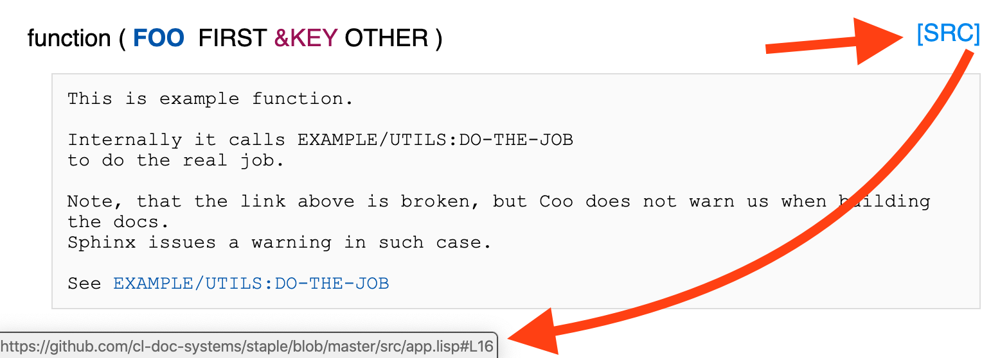

Lisp Project of the Day
staple
You can support this project by donating at:


Or see the list of project sponsors.
staple
| Documentation | 😀 |
| Docstrings | 😀 |
| Tests | 😀 |
| Examples | 🥺 |
| RepositoryActivity | 😀 |
| CI | 😀 |
Today we'll look at @Shinmera's documentation system called Staple.
As always, I've created the skeleton project for you.
But I must warn you. This skeleton is almost unusable, because of a few problems.
The first problem is that I wasn't able to make markdown work for the docstrings. When I do setup like suggests Staple documentation, it does not see all package of my system.
The second problem is that for some reason it works badly with my simple example system. It shows on the index page multiple equal links to the Example system.
Probably both problems are related to the ASDF system type. I'm using package inferred systems.
Also, the Staple's error messages a complete mess. It is not possible to figure out the origin of a warning. The output looks like that:
Scan was called 76 times.
Warning: could not find hyperspec map file. Adjust the path at the top of clhs-lookup.lisp to get links to the HyperSpec.
Scan was called 384 times.
Scan was called 116 times.
Scan was called 287 times.
Scan was called 94 times.
Scan was called 2005 times.
Scan was called 162 times.
Scan was called 162 times.
Scan was called 186 times.
Scan was called 397 times.
Scan was called 221 times.
Scan was called 502 times.
Scan was called 134 times.
Scan was called 130 times.
Scan was called 395 times.
Scan was called 1453 times.
WARN: Error during code markup: Invalid function name: STR:DOWNCASE
WARN: Error during code markup: Symbol name must not end with a package marker (the : character).
Scan was called 2782 times.
WARN: Error during code markup: Unquote not inside backquote.
Scan was called 95 times.
Scan was called 2019 times.
Scan was called 4518 times.
Scan was called 2670 times.
Scan was called 2209 times.
WARN: Error during code markup: A token consisting solely of multiple dots is illegal.
WARN: Error during code markup: Invalid function name: DOCPARSER:PARSE
WARN: Error during code markup: The character < is not a valid sub-character for the # dispatch macro.
WARN: Error during code markup: The character < is not a valid sub-character for the # dispatch macro.
WARN: Error during code markup: Symbol name must not end with a package marker (the : character).
WARN: Error during code markup: Invalid function name: 4
WARN: Error during code markup: Invalid function name: STAPLE-SERVER:START
WARN: Error during code markup: Invalid function name: STAPLE-SERVER:STOP
WARN: Error during code markup: Invalid function name: LQUERY-TEST:RUN
WARN: Error during code markup: Invalid function name: 1
WARN: Error during code markup: Symbol name without any escapes must not consist solely of package markers (: characters).
WARN: Error during code markup: The value
NIL
is not of type
CHARACTER
WARN: Error during code markup: The value
NIL
is not of type
CHARACTER
WARN: Error during code markup: While reading backquote, expected an object when input ended.
WARN: Error during code markup: While reading backquote, expected an object when input ended.
WARN: Error during code markup: The value
NIL
is not of type
CHARACTER
WARN: Error during code markup: Symbol name without any escapes must not consist solely of package markers (: characters).
WARN: Error during code markup: If a symbol token contains two package markers, they must be adjacent as in package::symbol.
WARN: Error during code markup: The value
NIL
is not of type
CHARACTER
WARN: Error during code markup: While reading symbol, expected the character | when input ended.Another hard thing is customization. Seems Staple was built for maximum flexibility and sometimes it is not obvious how to do such simple thing like adding yet another markdown page to the output.
Now to the good news :)
As I said Staple is very flexible. It uses CLOS and generic functions almost everywhere and you can extend it in a number ways. For example, you can add support for your own markup language.
There is also a unique feature: Staple automatically links every function documentation to its source on the GitHub:

Documentation for @Shinmera's libraries looks really good. Take look to the Radiance, for example:
https://shirakumo.github.io/radiance/
Probably Staple just needs more polishing to become a great documentation system for Common Lisp libraries?
For now Coo is my favourite. But in the next week or two, we'll look at a few other Common Lisp documentation systems.
Update
Seems documentation building works quite unstable and sometimes does not build some pages where is running on the CI :(
Brought to you by 40Ants under